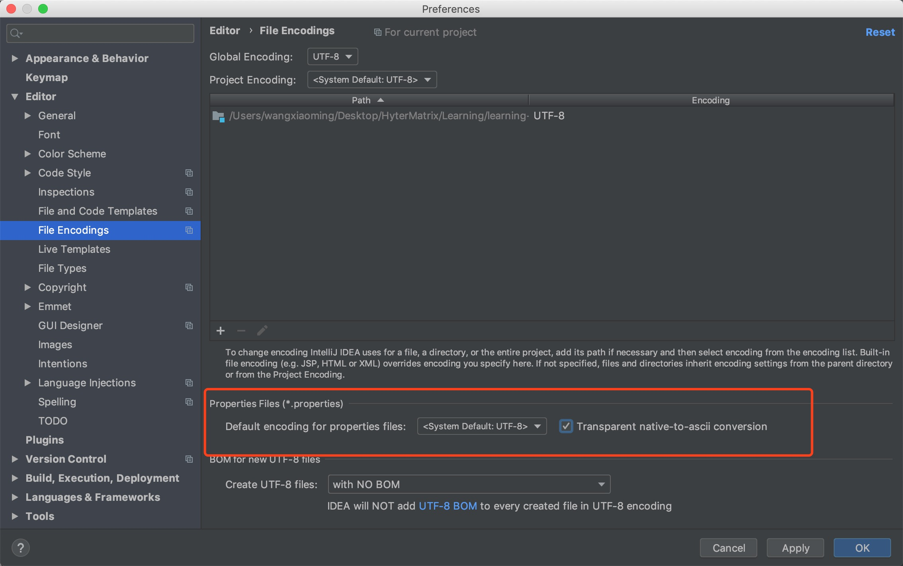

第一章 Spring Boot 配置文件
配置文件
SpringBoot使用一个全局的配置文件，配置文件名是固定的；
- application.properties
- application.yml
配置文件的作用：修改SpringBoot自动配置的默认值；SpringBoot在底层都给我们自动配置好；
YAML（YAML Ain't Markup Language）
YAML A Markup Language：是一个标记语言
YAML isn't Markup Language：不是一个标记语言；
标记语言：
以前的配置文件；大多都使用的是 xxxx.xml文件；
YAML：以数据为中心，比json、xml等更适合做配置文件；
YAML：配置例子
server:
port: 8081
2
XML：
<server>
<port>8081</port>
</server>
2
3
YAML语法
基本语法
k:(空格)v：表示一对键值对（空格必须有）；
以空格的缩进来控制层级关系；只要是左对齐的一列数据，都是同一个层级的
server:
port: 8081
path: /hello
2
3
属性和值也是大小写敏感；
值的写法
字面量：普通的值（数字，字符串，布尔）
k: v：字面直接来写；
字符串默认不用加上单引号或者双引号；
""：双引号；不会转义字符串里面的特殊字符；特殊字符会作为本身想表示的意思
name: "zhangsan \n lisi"：输出；zhangsan 换行 lisi
''：单引号；会转义特殊字符，特殊字符最终只是一个普通的字符串数据
name: ‘zhangsan \n lisi’：输出；zhangsan \n lisi
对象、Map（属性和值）（键值对）：
k: v：在下一行来写对象的属性和值的关系；注意缩进
对象还是k: v的方式
friends:
lastName: zhangsan
age: 20
2
3
行内写法：
friends: {lastName: zhangsan,age: 18}
数组（List、Set）：
用- 值表示数组中的一个元素
pets:
- cat
- dog
- pig
2
3
4
行内写法
pets: [cat,dog,pig]
配置文件值注入
配置文件
person:
lastName: hello
age: 18
boss: false
birth: 2017/12/12
maps: {k1: v1,k2: 12}
lists:
- lisi
- zhaoliu
dog:
name: 小狗
age: 12
2
3
4
5
6
7
8
9
10
11
12
javaBean：
/**
* 将配置文件中配置的每一个属性的值，映射到这个组件中
* @ConfigurationProperties：告诉SpringBoot将本类中的所有属性和配置文件中相关的配置进行绑定；
* prefix = "person"：配置文件中哪个下面的所有属性进行一一映射
*
* 只有这个组件是容器中的组件，才能容器提供的@ConfigurationProperties功能；
*
*/
@Component
@ConfigurationProperties(prefix = "person")
public class Person {
private String lastName;
private Integer age;
private Boolean boss;
private Date birth;
private Map<String,Object> maps;
private List<Object> lists;
private Dog dog;
2
3
4
5
6
7
8
9
10
11
12
13
14
15
16
17
18
19
20
21
我们可以导入配置文件处理器，以后编写配置就有提示了
<!--导入配置文件处理器，配置文件进行绑定就会有提示-->
<dependency>
<groupId>org.springframework.boot</groupId>
<artifactId>spring-boot-configuration-processor</artifactId>
<optional>true</optional>
</dependency>
2
3
4
5
6
properties配置文件在idea中默认utf-8可能会乱码
调整

@Value获取值和@ConfigurationProperties获取值比较
| @ConfigurationProperties | @Value | |
|---|---|---|
| 功能 | 批量注入配置文件中的属性 | 一个个指定 |
| 松散绑定（松散语法） | 支持 | 不支持 |
| SpEL | 不支持 | 支持 |
| JSR303数据校验 | 支持 | 不支持 |
| 复杂类型封装 | 支持 | 不支持 |
配置文件yml还是properties他们都能获取到值；
如果说，我们只是在某个业务逻辑中需要获取一下配置文件中的某项值，使用@Value；
如果说，我们专门编写了一个javaBean来和配置文件进行映射，我们就直接使用@ConfigurationProperties；
配置文件注入值数据校验
@Component
@ConfigurationProperties(prefix = "person")
@Validated
public class Person {
/**
* <bean class="Person">
* <property name="lastName" value="字面量/${key}从环境变量、配置文件中获取值/#{SpEL}"></property>
* <bean/>
*/
//lastName必须是邮箱格式
@Email
//@Value("${person.last-name}")
private String lastName;
//@Value("#{11*2}")
private Integer age;
//@Value("true")
private Boolean boss;
private Date birth;
private Map<String,Object> maps;
private List<Object> lists;
private Dog dog;
2
3
4
5
6
7
8
9
10
11
12
13
14
15
16
17
18
19
20
21
22
23
24
@PropertySource&@ImportResource&@Bean
@PropertySource：加载指定的配置文件；
/**
* 将配置文件中配置的每一个属性的值，映射到这个组件中
* @ConfigurationProperties 告诉SpringBoot将本类中所有属性和配置文件相关的配置进行绑定
* prefix = "person" ：配置文件中哪个下面的所有属性进行一一映射
* @ConfigurationProperties(prefix = "person") 默认从全局配置文件中获取值
*
* 只有这个组件是容器中的组件，才能使用容器提供的@ConfigurationProperties功能
*/
@PropertySource(value = {"classpath:person.properties"})
@Component
@ConfigurationProperties(prefix = "person")
@Validated
public class Person {
// @Value("${person.last-name}")
// lastName必须是邮箱格式
// @Email
private String lastName;
// @Value("#{10*11}")
private Integer age;
// @Value("true")
private Boolean boss;
private Date birth;
private Map<String, Object> maps;
private List<Object> lists;
private Dog dog;
2
3
4
5
6
7
8
9
10
11
12
13
14
15
16
17
18
19
20
21
22
23
24
25
26
27
@ImportResource：导入Spring的配置文件，让配置文件里面的内容生效；
Spring Boot里面没有Spring的配置文件，我们自己编写的配置文件，也不能自动识别；
想让Spring的配置文件生效，加载进来；@ImportResource标注在一个配置类上
@ImportResource(locations = {"classpath:beans.xml"})
导入Spring的配置文件让其生效
2
不来编写Spring的配置文件
<?xml version="1.0" encoding="UTF-8"?>
<beans xmlns="http://www.springframework.org/schema/beans"
xmlns:xsi="http://www.w3.org/2001/XMLSchema-instance"
xsi:schemaLocation="http://www.springframework.org/schema/beans http://www.springframework.org/schema/beans/spring-beans.xsd">
<bean id="helloService" class="com.atguigu.springboot.service.HelloService"></bean>
</beans>
2
3
4
5
6
7
8
SpringBoot推荐给容器中添加组件的方式；推荐使用全注解的方式
1、配置类 @Configuration ------>Spring配置文件
2、使用 @Bean 给容器中添加组件
/**
* @Configuration：指明当前类是一个配置类；就是来替代之前的Spring配置文件
*
* 在配置文件中用<bean><bean/>标签添加组件
*
*/
@Configuration
public class MyAppConfig {
//将方法的返回值添加到容器中；容器中这个组件默认的id就是方法名
@Bean
public HelloService helloService02(){
System.out.println("配置类@Bean给容器中添加组件了...");
return new HelloService();
}
}
2
3
4
5
6
7
8
9
10
11
12
13
14
15
16
配置文件占位符
随机数
${random.value}、${random.int}、${random.long}
${random.int(10)}、${random.int[1024,65536]}
2
3
占位符获取之前配置的值，如果没有可以是用:指定默认值
person.last-name=张三${random.uuid}
person.age=${random.int}
person.birth=2017/12/15
person.boss=false
person.maps.k1=v1
person.maps.k2=14
person.lists=a,b,c
person.dog.name=${person.hello:hello}_dog
person.dog.age=15
2
3
4
5
6
7
8
9
Profile
多Profile文件
我们在主配置文件编写的时候，文件名可以是 application-{profile}.properties/yml
默认使用application.properties的配置
yml支持多文档块方式
server:
port: 8081
spring:
profiles:
active: prod
---
server:
port: 8083
spring:
profiles: dev
---
server:
port: 8084
spring:
profiles: prod #指定属于哪个环境
2
3
4
5
6
7
8
9
10
11
12
13
14
15
16
17
18
19
20
激活指定profile
1、在配置文件中指定 spring.profiles.active=dev
2、命令行：
java -jar spring-boot-02-config-0.0.1-SNAPSHOT.jar --spring.profiles.active=dev；
可以直接在测试的时候，配置传入命令行参数
3、虚拟机参数；
-Dspring.profiles.active=dev
配置文件加载位置
springboot 启动会扫描以下位置的application.properties或者application.yml文件作为Spring boot的默认配置文件
–file:./config/
–file:./
–classpath:/config/
–classpath:/
优先级由高到底，高优先级的配置会覆盖低优先级的配置；
SpringBoot会从这四个位置全部加载主配置文件；互补配置；
==我们还可以通过spring.config.location来改变默认的配置文件位置==
项目打包好以后，我们可以使用命令行参数的形式，启动项目的时候来指定配置文件的新位置；指定配置文件和默认加载的这些配置文件共同起作用形成互补配置；
java -jar spring-boot-02-config-02-0.0.1-SNAPSHOT.jar --spring.config.location=G:/application.properties
外部配置加载顺序
==SpringBoot也可以从以下位置加载配置； 优先级从高到低；高优先级的配置覆盖低优先级的配置，所有的配置会形成互补配置==
1.命令行参数
所有的配置都可以在命令行上进行指定
java -jar spring-boot-02-config-02-0.0.1-SNAPSHOT.jar --server.port=8087 --server.context-path=/abc
多个配置用空格分开； --配置项=值
2.来自java:comp/env的JNDI属性
3.Java系统属性（System.getProperties()）
4.操作系统环境变量
5.RandomValuePropertySource配置的random.*属性值
==由jar包外向jar包内进行寻找；==
==优先加载带profile==
6.jar包外部的application-{profile}.properties或application.yml(带spring.profile)配置文件
7.jar包内部的application-{profile}.properties或application.yml(带spring.profile)配置文件
==再来加载不带profile==
8.jar包外部的application.properties或application.yml(不带spring.profile)配置文件
9.jar包内部的application.properties或application.yml(不带spring.profile)配置文件
10.@Configuration注解类上的@PropertySource
11.通过SpringApplication.setDefaultProperties指定的默认属性
所有支持的配置加载来源；
参考官方文档springboot1.5.9 (opens new window)
自动配置原理
配置文件到底能写什么？怎么写？自动配置原理；
配置文件能配置的属性参照 (opens new window)
1、自动配置原理：
1）、SpringBoot启动的时候加载主配置类，开启了自动配置功能 ==@EnableAutoConfiguration==
2）、@EnableAutoConfiguration 作用：
利用
EnableAutoConfigurationImportSelector给容器中导入一些组件？可以查看
selectImports()方法的内容；List<String> configurations = getCandidateConfigurations(annotationMetadata,attributes);获取候选的配置SpringFactoriesLoader.loadFactoryNames() 扫描所有jar包类路径下 META-INF/spring.factories 把扫描到的这些文件的内容包装成properties对象 从properties中获取到EnableAutoConfiguration.class类（类名）对应的值，然后把他们添加在容器中1
2
3
4
5
将 类路径下 META-INF/spring.factories 里面配置的所有EnableAutoConfiguration的值加入到了容器中
# Auto Configure
org.springframework.boot.autoconfigure.EnableAutoConfiguration=\
org.springframework.boot.autoconfigure.admin.SpringApplicationAdminJmxAutoConfiguration,\
org.springframework.boot.autoconfigure.aop.AopAutoConfiguration,\
org.springframework.boot.autoconfigure.amqp.RabbitAutoConfiguration,\
org.springframework.boot.autoconfigure.batch.BatchAutoConfiguration,\
org.springframework.boot.autoconfigure.cache.CacheAutoConfiguration,\
org.springframework.boot.autoconfigure.cassandra.CassandraAutoConfiguration,\
org.springframework.boot.autoconfigure.cloud.CloudAutoConfiguration,\
org.springframework.boot.autoconfigure.context.ConfigurationPropertiesAutoConfiguration,\
org.springframework.boot.autoconfigure.context.MessageSourceAutoConfiguration,\
org.springframework.boot.autoconfigure.context.PropertyPlaceholderAutoConfiguration,\
org.springframework.boot.autoconfigure.couchbase.CouchbaseAutoConfiguration,\
org.springframework.boot.autoconfigure.dao.PersistenceExceptionTranslationAutoConfiguration,\
org.springframework.boot.autoconfigure.data.cassandra.CassandraDataAutoConfiguration,\
org.springframework.boot.autoconfigure.data.cassandra.CassandraRepositoriesAutoConfiguration,\
org.springframework.boot.autoconfigure.data.couchbase.CouchbaseDataAutoConfiguration,\
org.springframework.boot.autoconfigure.data.couchbase.CouchbaseRepositoriesAutoConfiguration,\
org.springframework.boot.autoconfigure.data.elasticsearch.ElasticsearchAutoConfiguration,\
org.springframework.boot.autoconfigure.data.elasticsearch.ElasticsearchDataAutoConfiguration,\
org.springframework.boot.autoconfigure.data.elasticsearch.ElasticsearchRepositoriesAutoConfiguration,\
org.springframework.boot.autoconfigure.data.jpa.JpaRepositoriesAutoConfiguration,\
org.springframework.boot.autoconfigure.data.ldap.LdapDataAutoConfiguration,\
org.springframework.boot.autoconfigure.data.ldap.LdapRepositoriesAutoConfiguration,\
org.springframework.boot.autoconfigure.data.mongo.MongoDataAutoConfiguration,\
org.springframework.boot.autoconfigure.data.mongo.MongoRepositoriesAutoConfiguration,\
org.springframework.boot.autoconfigure.data.neo4j.Neo4jDataAutoConfiguration,\
org.springframework.boot.autoconfigure.data.neo4j.Neo4jRepositoriesAutoConfiguration,\
org.springframework.boot.autoconfigure.data.solr.SolrRepositoriesAutoConfiguration,\
org.springframework.boot.autoconfigure.data.redis.RedisAutoConfiguration,\
org.springframework.boot.autoconfigure.data.redis.RedisRepositoriesAutoConfiguration,\
org.springframework.boot.autoconfigure.data.rest.RepositoryRestMvcAutoConfiguration,\
org.springframework.boot.autoconfigure.data.web.SpringDataWebAutoConfiguration,\
org.springframework.boot.autoconfigure.elasticsearch.jest.JestAutoConfiguration,\
org.springframework.boot.autoconfigure.freemarker.FreeMarkerAutoConfiguration,\
org.springframework.boot.autoconfigure.gson.GsonAutoConfiguration,\
org.springframework.boot.autoconfigure.h2.H2ConsoleAutoConfiguration,\
org.springframework.boot.autoconfigure.hateoas.HypermediaAutoConfiguration,\
org.springframework.boot.autoconfigure.hazelcast.HazelcastAutoConfiguration,\
org.springframework.boot.autoconfigure.hazelcast.HazelcastJpaDependencyAutoConfiguration,\
org.springframework.boot.autoconfigure.info.ProjectInfoAutoConfiguration,\
org.springframework.boot.autoconfigure.integration.IntegrationAutoConfiguration,\
org.springframework.boot.autoconfigure.jackson.JacksonAutoConfiguration,\
org.springframework.boot.autoconfigure.jdbc.DataSourceAutoConfiguration,\
org.springframework.boot.autoconfigure.jdbc.JdbcTemplateAutoConfiguration,\
org.springframework.boot.autoconfigure.jdbc.JndiDataSourceAutoConfiguration,\
org.springframework.boot.autoconfigure.jdbc.XADataSourceAutoConfiguration,\
org.springframework.boot.autoconfigure.jdbc.DataSourceTransactionManagerAutoConfiguration,\
org.springframework.boot.autoconfigure.jms.JmsAutoConfiguration,\
org.springframework.boot.autoconfigure.jmx.JmxAutoConfiguration,\
org.springframework.boot.autoconfigure.jms.JndiConnectionFactoryAutoConfiguration,\
org.springframework.boot.autoconfigure.jms.activemq.ActiveMQAutoConfiguration,\
org.springframework.boot.autoconfigure.jms.artemis.ArtemisAutoConfiguration,\
org.springframework.boot.autoconfigure.flyway.FlywayAutoConfiguration,\
org.springframework.boot.autoconfigure.groovy.template.GroovyTemplateAutoConfiguration,\
org.springframework.boot.autoconfigure.jersey.JerseyAutoConfiguration,\
org.springframework.boot.autoconfigure.jooq.JooqAutoConfiguration,\
org.springframework.boot.autoconfigure.kafka.KafkaAutoConfiguration,\
org.springframework.boot.autoconfigure.ldap.embedded.EmbeddedLdapAutoConfiguration,\
org.springframework.boot.autoconfigure.ldap.LdapAutoConfiguration,\
org.springframework.boot.autoconfigure.liquibase.LiquibaseAutoConfiguration,\
org.springframework.boot.autoconfigure.mail.MailSenderAutoConfiguration,\
org.springframework.boot.autoconfigure.mail.MailSenderValidatorAutoConfiguration,\
org.springframework.boot.autoconfigure.mobile.DeviceResolverAutoConfiguration,\
org.springframework.boot.autoconfigure.mobile.DeviceDelegatingViewResolverAutoConfiguration,\
org.springframework.boot.autoconfigure.mobile.SitePreferenceAutoConfiguration,\
org.springframework.boot.autoconfigure.mongo.embedded.EmbeddedMongoAutoConfiguration,\
org.springframework.boot.autoconfigure.mongo.MongoAutoConfiguration,\
org.springframework.boot.autoconfigure.mustache.MustacheAutoConfiguration,\
org.springframework.boot.autoconfigure.orm.jpa.HibernateJpaAutoConfiguration,\
org.springframework.boot.autoconfigure.reactor.ReactorAutoConfiguration,\
org.springframework.boot.autoconfigure.security.SecurityAutoConfiguration,\
org.springframework.boot.autoconfigure.security.SecurityFilterAutoConfiguration,\
org.springframework.boot.autoconfigure.security.FallbackWebSecurityAutoConfiguration,\
org.springframework.boot.autoconfigure.security.oauth2.OAuth2AutoConfiguration,\
org.springframework.boot.autoconfigure.sendgrid.SendGridAutoConfiguration,\
org.springframework.boot.autoconfigure.session.SessionAutoConfiguration,\
org.springframework.boot.autoconfigure.social.SocialWebAutoConfiguration,\
org.springframework.boot.autoconfigure.social.FacebookAutoConfiguration,\
org.springframework.boot.autoconfigure.social.LinkedInAutoConfiguration,\
org.springframework.boot.autoconfigure.social.TwitterAutoConfiguration,\
org.springframework.boot.autoconfigure.solr.SolrAutoConfiguration,\
org.springframework.boot.autoconfigure.thymeleaf.ThymeleafAutoConfiguration,\
org.springframework.boot.autoconfigure.transaction.TransactionAutoConfiguration,\
org.springframework.boot.autoconfigure.transaction.jta.JtaAutoConfiguration,\
org.springframework.boot.autoconfigure.validation.ValidationAutoConfiguration,\
org.springframework.boot.autoconfigure.web.DispatcherServletAutoConfiguration,\
org.springframework.boot.autoconfigure.web.EmbeddedServletContainerAutoConfiguration,\
org.springframework.boot.autoconfigure.web.ErrorMvcAutoConfiguration,\
org.springframework.boot.autoconfigure.web.HttpEncodingAutoConfiguration,\
org.springframework.boot.autoconfigure.web.HttpMessageConvertersAutoConfiguration,\
org.springframework.boot.autoconfigure.web.MultipartAutoConfiguration,\
org.springframework.boot.autoconfigure.web.ServerPropertiesAutoConfiguration,\
org.springframework.boot.autoconfigure.web.WebClientAutoConfiguration,\
org.springframework.boot.autoconfigure.web.WebMvcAutoConfiguration,\
org.springframework.boot.autoconfigure.websocket.WebSocketAutoConfiguration,\
org.springframework.boot.autoconfigure.websocket.WebSocketMessagingAutoConfiguration,\
org.springframework.boot.autoconfigure.webservices.WebServicesAutoConfiguration
2
3
4
5
6
7
8
9
10
11
12
13
14
15
16
17
18
19
20
21
22
23
24
25
26
27
28
29
30
31
32
33
34
35
36
37
38
39
40
41
42
43
44
45
46
47
48
49
50
51
52
53
54
55
56
57
58
59
60
61
62
63
64
65
66
67
68
69
70
71
72
73
74
75
76
77
78
79
80
81
82
83
84
85
86
87
88
89
90
91
92
93
94
95
96
97
98
每一个这样的 xxxAutoConfiguration类都是容器中的一个组件，都加入到容器中；用他们来做自动配置；
3）、每一个自动配置类进行自动配置功能；
4）、以**HttpEncodingAutoConfiguration（Http编码自动配置）**为例解释自动配置原理；
@Configuration //表示这是一个配置类，以前编写的配置文件一样，也可以给容器中添加组件
@EnableConfigurationProperties(HttpEncodingProperties.class) //启动指定类的ConfigurationProperties功能；将配置文件中对应的值和HttpEncodingProperties绑定起来；并把HttpEncodingProperties加入到ioc容器中
@ConditionalOnWebApplication //Spring底层@Conditional注解（Spring注解版），根据不同的条件，如果满足指定的条件，整个配置类里面的配置就会生效； 判断当前应用是否是web应用，如果是，当前配置类生效
@ConditionalOnClass(CharacterEncodingFilter.class) //判断当前项目有没有这个类CharacterEncodingFilter；SpringMVC中进行乱码解决的过滤器；
@ConditionalOnProperty(prefix = "spring.http.encoding", value = "enabled", matchIfMissing = true) //判断配置文件中是否存在某个配置 spring.http.encoding.enabled；如果不存在，判断也是成立的
//即使我们配置文件中不配置pring.http.encoding.enabled=true，也是默认生效的；
public class HttpEncodingAutoConfiguration {
//他已经和SpringBoot的配置文件映射了
private final HttpEncodingProperties properties;
//只有一个有参构造器的情况下，参数的值就会从容器中拿
public HttpEncodingAutoConfiguration(HttpEncodingProperties properties) {
this.properties = properties;
}
@Bean //给容器中添加一个组件，这个组件的某些值需要从properties中获取
@ConditionalOnMissingBean(CharacterEncodingFilter.class) //判断容器没有这个组件？
public CharacterEncodingFilter characterEncodingFilter() {
CharacterEncodingFilter filter = new OrderedCharacterEncodingFilter();
filter.setEncoding(this.properties.getCharset().name());
filter.setForceRequestEncoding(this.properties.shouldForce(Type.REQUEST));
filter.setForceResponseEncoding(this.properties.shouldForce(Type.RESPONSE));
return filter;
}
2
3
4
5
6
7
8
9
10
11
12
13
14
15
16
17
18
19
20
21
22
23
24
25
26
27
28
根据当前不同的条件判断，决定这个配置类是否生效？
一但这个配置类生效；这个配置类就会给容器中添加各种组件；这些组件的属性是从对应的properties类中获取的，这些类里面的每一个属性又是和配置文件绑定的；
5）、所有在配置文件中能配置的属性都是在xxxxProperties类中封装者‘；配置文件能配置什么就可以参照某个功能对应的这个属性类
@ConfigurationProperties(prefix = "spring.http.encoding") //从配置文件中获取指定的值和bean的属性进行绑定
public class HttpEncodingProperties {
public static final Charset DEFAULT_CHARSET = Charset.forName("UTF-8");
2
3
4
精髓：
1）、SpringBoot启动会加载大量的自动配置类
2）、我们看我们需要的功能有没有SpringBoot默认写好的自动配置类；
3）、我们再来看这个自动配置类中到底配置了哪些组件；（只要我们要用的组件有，我们就不需要再来配置了）
4）、给容器中自动配置类添加组件的时候，会从properties类中获取某些属性。我们就可以在配置文件中指定这些属性的值；
xxxxAutoConfigurartion：自动配置类；
给容器中添加组件
xxxxProperties:封装配置文件中相关属性；
2、细节
1、@Conditional派生注解（Spring注解版原生的@Conditional作用）
作用：必须是@Conditional指定的条件成立，才给容器中添加组件，配置配里面的所有内容才生效；
| @Conditional扩展注解 | 作用（判断是否满足当前指定条件） |
|---|---|
| @ConditionalOnJava | 系统的java版本是否符合要求 |
| @ConditionalOnBean | 容器中存在指定Bean； |
| @ConditionalOnMissingBean | 容器中不存在指定Bean； |
| @ConditionalOnExpression | 满足SpEL表达式指定 |
| @ConditionalOnClass | 系统中有指定的类 |
| @ConditionalOnMissingClass | 系统中没有指定的类 |
| @ConditionalOnSingleCandidate | 容器中只有一个指定的Bean，或者这个Bean是首选Bean |
| @ConditionalOnProperty | 系统中指定的属性是否有指定的值 |
| @ConditionalOnResource | 类路径下是否存在指定资源文件 |
| @ConditionalOnWebApplication | 当前是web环境 |
| @ConditionalOnNotWebApplication | 当前不是web环境 |
| @ConditionalOnJndi | JNDI存在指定项 |
自动配置类必须在一定的条件下才能生效；
我们怎么知道哪些自动配置类生效；
==我们可以通过启用 debug=true属性；来让控制台打印自动配置报告==，这样我们就可以很方便的知道哪些自动配置类生效；
=========================
AUTO-CONFIGURATION REPORT
=========================
Positive matches:（自动配置类启用的）
-----------------
DispatcherServletAutoConfiguration matched:
- @ConditionalOnClass found required class 'org.springframework.web.servlet.DispatcherServlet'; @ConditionalOnMissingClass did not find unwanted class (OnClassCondition)
- @ConditionalOnWebApplication (required) found StandardServletEnvironment (OnWebApplicationCondition)
Negative matches:（没有启动，没有匹配成功的自动配置类）
-----------------
ActiveMQAutoConfiguration:
Did not match:
- @ConditionalOnClass did not find required classes 'javax.jms.ConnectionFactory', 'org.apache.activemq.ActiveMQConnectionFactory' (OnClassCondition)
AopAutoConfiguration:
Did not match:
- @ConditionalOnClass did not find required classes 'org.aspectj.lang.annotation.Aspect', 'org.aspectj.lang.reflect.Advice' (OnClassCondition)
2
3
4
5
6
7
8
9
10
11
12
13
14
15
16
17
18
19
20
21
22
23
24